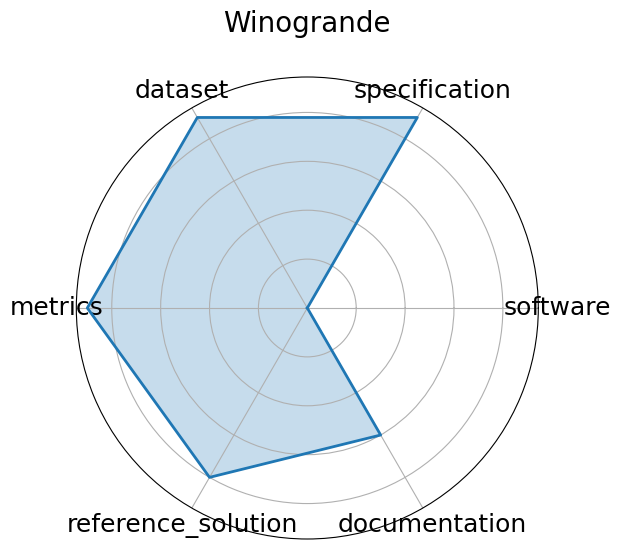

Edit: edit this entry
Date: 2019-07-24
Name: Winogrande
Domain: NLP; Commonsense
Focus: Winograd Schema-style pronoun resolution
Keywords: adversarial, pronoun resolution
Task Types: Pronoun resolution
Metrics: Accuracy, AUC
Models: RoBERTa, BERT, GPT-2
Citation:
Keisuke Sakaguchi, Ronan Le Bras, Chandra Bhagavatula, and Yejin Choi. Winogrande: an adversarial winograd schema challenge at scale. 2019. URL: https://arxiv.org/abs/1907.10641, arXiv:1907.10641.
bibtex: ``` @misc{sakaguchi2019winograndeadversarialwinogradschema,
archiveprefix = {arXiv},
author = {Keisuke Sakaguchi and Ronan Le Bras and Chandra Bhagavatula and Yejin Choi},
eprint = {1907.10641},
primaryclass = {cs.CL},
title = {WinoGrande: An Adversarial Winograd Schema Challenge at Scale},
url = {https://arxiv.org/abs/1907.10641},
year = {2019}}
```
Ratings:
Software:
Rating: 0
Reason: No template code provided
Specification:
Rating: 5
Reason: Task pronoun/coreference resolution is clearly defined in Winograd Schema style, with consistent input/output format; no system constraints included.
Dataset:
Rating: 5
Reason: Public, versioned, and FAIR-compliant with AFLite-generated splits to reduce annotation artifacts; hosted by AllenAI with good metadata.
Metrics:
Rating: 5
Reason: Accuracy and AUC are quantitative and well-aligned with disambiguation goals; standardized across evaluations.
Reference Solution:
Rating: 4
Reason: Baseline results available, requiring users to submit their methods along with their submissions. Constraints are not required in submissions.
Documentation:
Rating: 5
Reason: Dataset page and paper provide sufficient detail
Average Rating: 4.0
Radar Plot: 